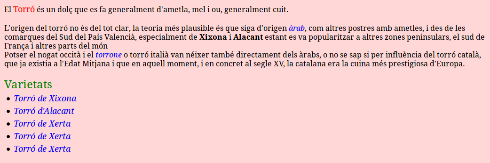

2 - Estratègies d'emmagatzematge de XML
L’XML és un llenguatge que permet tenir informació estructurada, ja siga per a intercanvi entre plataformes o, simplement, per facilitar un ràpid accés a continguts. La seua àmplia acceptació ha dut la necessitat d’idear mecanismes per poder guardar, de manera fàcil i àgil, grans volums de documents XML.
Hi ha més d'una manera, més d'una estratègia per a guardar la informació XML, però abans de definir-les hem de fer una xicoteta reflexió sobre els tipus de documents XML que ens podem trobar.
Document centrats en dades
Anomenats en anglès data-centric, estan pensats per a l’intercanvi entre plataformes. Solen ser documents amb estructures regulars i ben definides. Les dades que transmeten són simples i ben definides (encara que pot ser que siguen molt extenses), i en moltes ocasions són actualitzables. Acostumen a tenir com a origen una Base de Dades i, en conseqüència, no és massa important la seua persistència com a document XML. Aquest podria ser un exemple:
Es veu perfectament la seua estructura fortament jeràrquica, clara i concisa.
Document centrats en el document
Anomenats en anglès document-centric, amb una estructura irregular. L’origen i el destí acostuma a estar en les persones i solen estar fets a mà. Hi ha que poden arribar a tenir un cert format, però no és estricte ni definit i en tal cas parlem de dades semiestructurades. Exemples de documents centrats en el document són els llibres, els correus electrònics, els anuncis, etc.
A continuació veiem un exemple de document XML centrat en el document. Es tracta d’un document descriptiu d’un producte (torró) en el qual l’autor ha inserit diverses marques per facilitar-ne la consulta i la formatació en un navegador. Podeu comprovar-ho copiant el contingut en un fitxer amb extensió .xml (per exemple Torro.xml) i obrint-lo amb un navegador.
Si li afegírem un full d'estil (stylesheet o css) de manera prou senzilla podríem donar-li un aspecte més agradable, tal i com es va veure en el mòdul de Llenguatge de Marques. I es veu clarament que està centrat en el propi document, sense estructurar les dades massa. Aquest podria ser un exemple de css (el podríem anomenar Torro.css):
Producte {
background-color: #FFD7D7;
font-size: medium;
display: block;
margin: 10px;
}
NomProducte {
font-size: large;
color: red;
}
Descripcio{
display: block;
}
Origen {
display: block;
margin-top: 20px;
border-top: 1px;
}
Paragraf {
display: block;
}
Varietats {
display: block;
font-size: x-large;
color: green;
margin-top: 20px;
}
List {
}
Item {
display: list-item;
margin-left: 20px;
margin-top: 5px;
font-size: large;
color: black;
}
i {
font-style: italic;
color: Blue;
}
b {
font-weight: bold;
}
I si l'apliquem al document xml posant la següent línia al principi del document:
<?xml-stylesheet type="text/css" href="Torro.css"?>
tindríem el següent aspecte:

La classificació de documents en data-centric i document-centric no és sempre directa i clara i, en múltiples ocasions, el contingut estarà barrejat o serà difícil de catalogar en un o altre tipus. Així, podem tenir documents centrats en dades (com una comanda o una factura) on alguna de les dades tinga codificació lliure (per exemple, part de la descripció de les línies) i documents centrats en el document (com un manual d’usuari) amb una part regular amb format estricte i ben definit (com el nom de l’autor i la data de revisió). Malgrat això, la caracterització dels documents en data-centric i document-centric s’utilitza per ajudar a decidir quina és la millor estratègia d’emmagatzematge.
Ens cal, doncs, conèixer les tècniques d’emmagatzematge existents per, una vegada conegudes, decidir quina tècnica és més adequada segons el tipus de documents que hem de guardar i la gestió que en pretenem.
Estratègies d'emmagatzematge
Tècnicament hi ha tres possibles estratègies per guardar els documents XML:
-
Guardar-los directament en el sistema d’arxius del sistema operatiu. Opció molt pobra, ja que les funcionalitats que permet fer sobre el document queden limitades i definides pel Sistema Operatiu. No permet efectuar operacions sobre el contingut i només es permet el moviment del document com a una unitat. Si es tracta d’una petita quantitat de dades guardades en uns pocs documents XML, aquesta opció pot funcionar, però no és gens recomanable per a gestionar un volum elevat de documents XML.
-
Guardar-los en un Sistema Gestor de Bases de Dades Relacional o Orientat a Objectes. Aquesta opció obliga a una transformació del document XML cap al model que corresponga (relacional o orientat a objectes), per a poder guardar-lo.
-
Guardar-los en una base de dades XML nativa. Aquesta opció permet guardar directament el document XML a la base de dades sense cap tipus de transformació. Les bases de dades XML natives han estat dissenyades especialment per a l’emmagatzematge d’XML. L’abreviatura és BD-XML nativa. L’abreviatura anglesa és NXD.
Deixant de banda la primera opció, podríem dir com a regla general que els documents de tipus data-centric s’emmagatzemarien en una Base de Dades tradicional (relacional o orientada a objectes). Això es pot fer bé fent un mapatge de les dades, tenint la possibilitat de fer-lo l'usuari, per mitjà d’eines de tercers, o per les capacitats que el SGBD incorpora per a poder tractar XML. En aquest últim cas, es diu que la base de dades està habilitada per a XML (XML-enabled).
En canvi, els documents de tipus document-centric es guardarien en una base de dades XML nativa.
Aquestes regles no són absolutes. D’una banda, els documents data-centric (sobretot si es tracta de dades semiestructurades) es poden guardar en bases de dades natives. De l’altra, els documents document-centric poden ser guardats en bases de dades tradicionals en aquells casos en què es precisen poques funcionalitats específiques XML.
En el moment en què va aparèixer la necessitat de guardar documents XML, l’emmagatzematge de dades estava centrat en els SGBD Relacionals o Orientats a Objectes i van sorgir dues tendències:
-
D’una banda, els grans SGBD existents van començar a introduir funcionalitats XML, donant lloc a l’aparició dels SGBD-XML habilitats.
-
D'una altra banda, van començar a aparèixer els SGBD-XML natives.
Avui en dia, els límits entre els SGBD-XML habilitades i els SGBD-XML natives s’estan desdibuixant, ja que les versions actuals de molts SGBD tradicionals (Relacionals i Orientats a Objectes) ja incorporen capacitats natives d’XML i alguns SGBD-XML natives faciliten l’emmagatzematge de fragments de documents XML en bases de dades externes (usualment relacionals).
En la pregunta següent ens centrarem en guardar en un SGBD relacional, primer fent un mapatge manual, i després utilitzant les eines que ens proporciona el SGBD per a manipular documents XML. Ho farem en PostgreSQL, que és un SGBD habilitat per a XML.
Llicenciat sota la Llicència Creative Commons Reconeixement NoComercial CompartirIgual 2.5